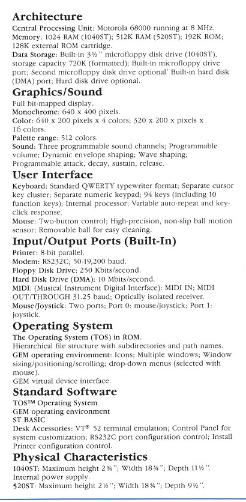

The Atari 1040ST was Atari's 1MB version ST, it also included several new enhancements included a new version of TOS which was ROM based. It's new features weren't a grand leap forward (with the exception of the Blitter which was introduced later) but its increased memory and OS in ROM were a step in the right direction. However competition from IBM, Apple and Amiga were getting strong by the minute and the 1040ST did not represent as big a leap forward as the others were starting to make with their systems.
Technical Specifications
